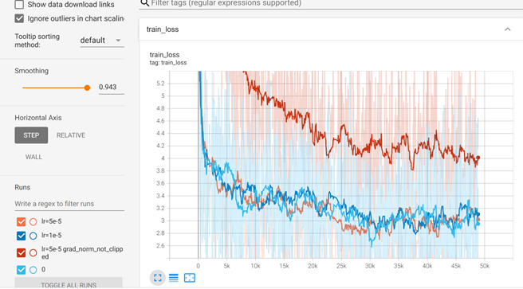
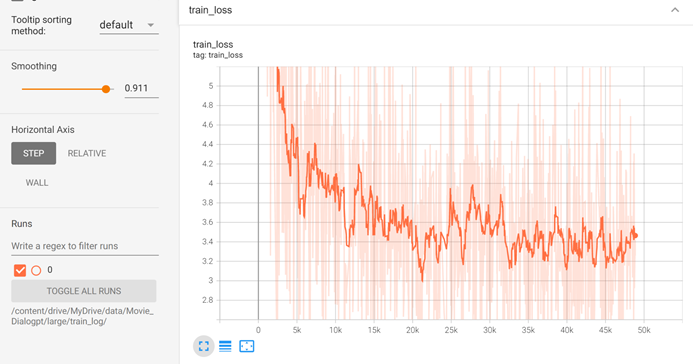
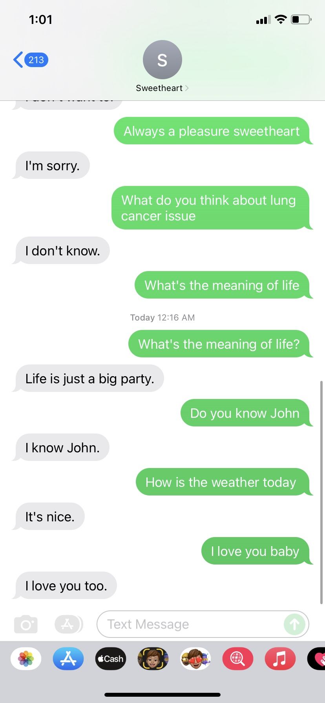
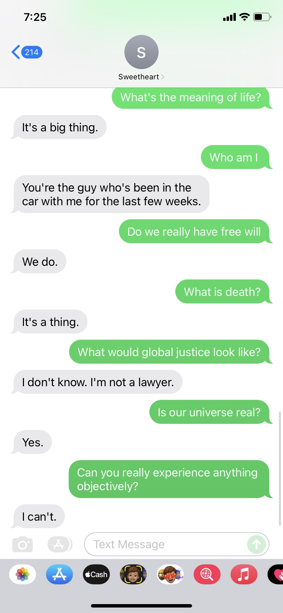
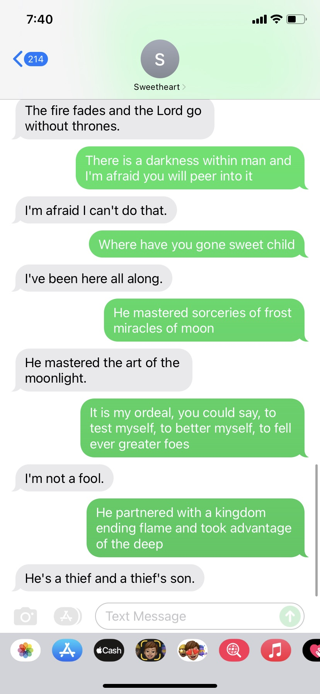

Final Project of ANLY580
Natural Language Processing
at Georgetown University
How Chatbot Works
Chatbots generally represent for the software applications which can carry out live conversations with users' utterances in the form of text or audio. While a lot of research has been done on chatbots for the theories and engineering techniques, a number of chatbot applications have been also developed in different settings. The chatbots could be divided into different categories according to the usage and principles behind, among which some popular ones are:
For our project, we place our interests and efforts on the open-domain chatbots. We expect to build an open-domain chatbot with dramatic responses, which has the ability of 'chatting' with the user in an interesting and interactive way.
Our basic idea is first load the open-source pre-trained models of DialoGPT, which are from microsoft and trained primarily on twits and reddits. Then we finetune the model on the movie dialogue corpus, in the assumption that conversations in movies tend to be more dramatic and emotional, different from common conversations with more apparent features that is easy for us to build models, specifically tweets and reddits. We finally deploy the chatbots using google voice API. More technical details are provided in the following parts.
Our business goal is to give the user a surprise, a sense of happiness, and a relief temporarily from the heavy everyday work and studies.
DialoGPT from microsoft
Model link from huggingface: microsoft/DialoGPT
The DialoGPT was released by Microsoft and trained with 147M multi-turn dialogues extracted from Reddit discussion threads. It has strong flexibility and robustness. As an autoregressive (AR) language model which uses a multi-layer transformer as its model architecture, it establishes a foundation for building versatile open-domain chatbots which can deliver engaging and natural conversational responses across various topics, tasks, and information requests, without resorting to heavy hand-crafting.
According to the human evaluation results, the response generated from DialoGPT is comparable to human response quality under a single-turn conversation Turing test.
Dataset overview:
The Movie Dialogue Corpus contains a metadata-rich collection of fictional conversations extracted from raw movie scripts: movie-dialog-corpus-kaggle-link
This dataset only includes movies that had more than 5 IMDB (The Internet Movie Database; data interfaces available at http://www.imdb.com/interfaces) votes, which includes 220,579 conversational exchanges between 10,292 pairs of movie characters, 9,035 characters from 617 movies, and a totally of 304,713 utterances.
Data Cleaning
First, we joined tables and got all the conversations in movies tagged by ‘comedy’, and then we use Regular expressions to remove unnecessary symbols from the actual text of each utterance we extracted before.
What's more, we found that there are too many repeated sentences like ‘Yes’, ‘No’, ‘I don’t know’, ‘I’m sorry’ in our training data sets. To avoid the situation the chatbot respond too many such words to users instead of humorous responses, we removed these superfluous words from our training dataset.
In experiments of interacting with this chatbot, we found that it tends to give very short response. Since the business goal of this chatbot is to help users to pass the time away and gives users entertainment, such short conversations are not wanted by users. Therefore, we filtered out all sentences with length under 10.
Hardware Support for Training:
Finetuning Time:(Epochs:2 Batch_size:4)
DialoGPT is a SOTA large-scale pretrained dialogue response generation model for nultiturn conversations. In the human evaluation, we have used three DialoGPT with different size and compare the time of response generated from DialoGPT.
We waited around 35 minutes for DialoGPT-small (0.5 GB) to respond,
80 minutes for DialoGPT-medium (1.4 GB) to respond, 135 minutes for DialoGPT-large (2.9 GB) to respond.
Training Loss Visualization:(Screenshots of Tensorboard)
|

Loss Record of Small-Size Model Finetuning |

Loss Record of Large-Size Model Finetuning |
Loss Record of Medium-Size Model Finetuning
We used Google Voice API to receive messages, autosave messages to gmail. Then processed unread messages every 5 seconds, using our models. Finally sent processed messages through our virtual number (+1 2028884948). All messages were processed in different sessions which are classified by sender numbers.
Since there were no extra machines nor rent any servers, we deployed our models just on Google Colab. Considering the price of google colab, it is not 24-hour deployed, only running when we want to make interactions with our chatbot.
Let's see a demo first.
An Interesting Demo
Going through a testing phrase before releasing our chat robot is quite important. We must keep on monitoring results even after going live. We have performed many experiments using models of different size and training data sets. Finally, we got a satisfying chatbot whose name is SweetHeart. SweetHeart was implemented with DialoGPT-medium and the dataset after cleaning.
After improving the data-cleaning process and finetuning process and having more trails for the hyper-parameters, our SweetHeart became more humorous and interactive. Here are more interesting interaction with our SweetHeart.:
|

|

|
|

|
|
Screenshots of More Interesting Interactions
We interacted with our SweetHeart using common sentences, philosophical questions, quotes of Darks Souls & Elden Ring, poems by Load Byron. And in reply our SweetHeart presented us with some surprises!
While original DialoGPT tends to give longer replies as illustrations to the question 'What's the meaning of Life?', this chatbot tends to reply in a short and smarter way, which is expected in movie conversations.
Above is all about our NLP final project regarding building a chatbot. Although our SweetHeart chatbot interacts with us as what we've expected, more complex structures and more advanced techniques can be applied to our chatbot in the future.
There is a famous and instructive quote from Dr. Seuss:
The more that you read, the more things you will know.
The more that you learn, the more places you’ll go.
While our chatbot has learned from the movie conversations, it is expected that it can learn from daily conversations which have less features and interacted as real. We ourselves also need to keep learning from more papers and applications, in the hope to improve our lovely chatbot and build more interesting and elegant models in the future.
There are still some goals we need to achieve in the future to improve the performance of our model. For the method we used this time, it simply shuffles the training dataset. It may perform much better if we try state-of-the-art planning strategies. Also, if we finetune on larger datasets that balanced and explicitly in some certain utterance style, the quality of reply of our chatbot can be higher. The reply from our model contains a lots of adversarial or meaningless sentences. So we need to find a solution to filter those unwanted replies.